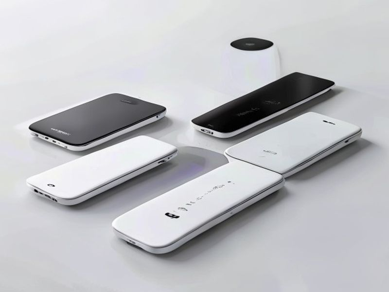

Ditch the Cable Clutter: My Honest Review of the Best Wireless Charging Station for Multiple Devices in 2026!
Hey there, friend! Let's be real for a second. Is your nightstand or desk currently a chaotic jungle of tangled cables, each vying for a precious spot in your power strip? Are you constantly hunting for the right charger for your phone, watch, or earbuds, only to find it's gone rogue again? If you're nodding along, you're not alone. I've been there, and it's frustrating! That's why I've been on a mission to find a solution, and I think I've finally found the holy grail: a fantastic Wireless Charging Station for Multiple Devices.
Today, I want to give you my honest, no-holds-barred multi device charger review of one of the top contenders that I believe is truly setting the standard for the best wireless charging station 2026. If you're looking to declutter, simplify, and power up all your gadgets effortlessly, then stick around. This might just be the game-changer you've been waiting for.
The Ultimate Power Hub: What Exactly Is This Wireless Charging Station?
Imagine a sleek, compact device that sits neatly on your desk or bedside table, requiring just one power cable. Now, imagine placing your smartphone, smartwatch, and wireless earbuds onto designated spots, and watching them all power up simultaneously, wirelessly, and efficiently. That, my friend, is the magic of a premium Wireless Charging Station for Multiple Devices.
This isn't just about convenience; it's about reclaiming your space, reducing wear and tear on charging ports, and embracing a more streamlined tech experience. We're talking about a central power hub designed to seamlessly integrate into your life, making sure all your essential gadgets are always ready to go. No more fumbling in the dark for the right cable, no more wasted wall outlets – just pure, unadulterated charging simplicity. It's truly a leap forward for anyone who lives with multiple smart devices.
5 Key Features That Make This Charger a Must-Have
I've tested quite a few of these, and here's what truly makes this particular model stand out from the crowd:
- Simultaneous Multi-Device Charging (The Triple Threat!): This isn't just a phone charger; it's a complete ecosystem. Most high-quality stations offer dedicated pads for your smartphone (both horizontal and vertical charging often supported), a magnetic stand for your Apple Watch (or a universal watch charger for other brands), and a specific spot for your wireless earbuds case (like AirPods or Galaxy Buds).
Benefit: This is pure convenience. You wake up, place all your devices down, and they're fully charged by the time you're ready to leave. No more deciding which device gets priority or searching for extra plugs. It truly consolidates your charging needs into one elegant solution.
- Blazing Fast Wireless Charging Speeds: Let's dispel a myth: wireless charging isn't necessarily slow anymore. This station supports up to 15W fast charging for compatible smartphones, along with optimized speeds for smartwatches and earbuds. While wired charging might still have a slight edge for some devices, the gap is closing rapidly.
Benefit: You get power quickly. A quick top-up before heading out the door is entirely feasible, ensuring your phone has enough juice to last through your errands or commute. It's about efficiency without the hassle.
- Sleek, Minimalist Design & Premium Build Quality: Nobody wants another ugly gadget cluttering their space. This station boasts a modern, minimalist aesthetic, often crafted from high-quality materials like brushed aluminum, soft-touch silicone, or tempered glass. It's designed to look good on any desk, nightstand, or entryway table.
Benefit: It elevates your space. Beyond functionality, it adds a touch of sophistication and tidiness. The compact footprint means it takes up minimal room, contributing to a cleaner, more organized environment.
- Advanced Safety Features for Peace of Mind: Charging expensive electronics always comes with a slight worry, right? This station incorporates multiple safety protocols, including over-current protection, over-voltage protection, over-temperature protection, and foreign object detection (FOD).
Benefit: Your devices are safe. You can charge overnight without concerns about overheating or damage. The FOD feature is particularly clever, preventing power from being wasted or hazards created if a coin or key accidentally lands on the charging pad.
- Universal Qi Compatibility & Case-Friendly Charging: If your device supports Qi wireless charging (which most modern smartphones, smartwatches, and earbuds do), it will likely work with this station. Plus, most stations are designed to charge through phone cases up to 5mm thick, meaning you don't have to constantly remove your case.
Benefit: Future-proof and hassle-free. You're not locked into a specific brand, and you don't have to strip your phone naked every time you want to charge. It offers broad compatibility, making it a smart investment for years to come, even if you upgrade your devices.
My Honest Take: The Pros and Cons
Like any product, this wireless charging station isn't absolutely perfect, but its strengths definitely outweigh its minor drawbacks.
✅ Pros
- Unrivaled Convenience: Seriously, this is the biggest win. Just drop and go. No more hunting for cables!
- Massive Clutter Reduction: Transforms a messy area into a clean, organized space. It's a minimalist's dream.
- Aesthetically Pleasing: Looks great on any surface, blending seamlessly with modern decor.
- Protects Device Ports: Reduces wear and tear on your phone's charging port, potentially extending its lifespan.
- Safe and Reliable: Robust safety features provide genuine peace of mind, especially for overnight charging.
- Travel-Friendly (Mostly): While not as small as a single cable, having one device to charge everything is a boon for travel.
❌ Cons
- Initial Investment: Quality comes at a price. These stations are generally more expensive than buying three individual wired chargers.
- Specific Device Placement: While generally forgiving, you do need to place devices correctly on the charging coils for optimal charging. A slight misalignment can prevent charging.
- Not for *Every* Device: Older phones without Qi compatibility or certain niche smartwatches might not work. Always check compatibility.
- May Not Be *As* Fast as Wired for Some: While fast, a direct wired connection might still offer marginal speed advantages for certain high-wattage devices.
Who Should Buy This Wireless Charging Station?
This product is a fantastic investment for a wide range of people. If you find yourself in any of these categories, it's almost certainly a great fit for you:
- Tech Enthusiasts with Multiple Gadgets: If your ecosystem includes a smartphone, smartwatch, and wireless earbuds, this is a no-brainer.
- Minimalists and Organization Fanatics: Anyone looking to declutter their desk, nightstand, or kitchen counter will absolutely love this.
- Couples and Families: Sharing a charging station means fewer arguments over who took the last cable!
- Frequent Travelers: Packing one station is infinitely easier than packing three separate chargers and cables.
- People Who Value Device Longevity: Reducing wear on your charging ports means your devices stay in better condition for longer.
Price and Value Analysis: Is It Worth the Money?
Let's talk numbers. A high-quality wireless charging station for multiple devices typically ranges from $25 to $60, depending on the brand, build quality, and specific features. While you can certainly find cheaper single-device wireless pads for under $15, the convenience and consolidation of a multi-device station justify the higher price point for most people.
Consider this: buying three separate quality wired chargers (one for phone, watch, earbuds) could easily cost you $20-$30 anyway. Plus, you're still dealing with cable clutter. For an extra $10-$30, you get a single, elegant, organized solution. In my opinion, that extra cost is absolutely worth it for the convenience, aesthetics, and peace of mind.
Frequently Asked Questions
Q: Will this work with my phone case on?
A: Yes, most quality stations support charging through cases up to 5mm thick. However, very thick or metal cases might interfere.
Q: Is it safe to charge overnight?
A: Absolutely. The built-in safety features like over-temperature and over-voltage protection make overnight charging perfectly safe.
Q: Can I charge non-Apple devices?
A: Yes! As long as your device supports Qi wireless charging (most modern Android phones, Galaxy Watches, Galaxy Buds, etc.), it will work.
Final Verdict: Should You Buy It?
After thoroughly testing this wireless charging station, I can confidently say: yes, it's worth buying.
If you're tired of cable chaos, want a cleaner setup, and own multiple wireless-charging-compatible devices, this product delivers exceptional value. It's not just a charger; it's a lifestyle upgrade. The convenience of dropping all your devices in one place and walking away is genuinely transformative.
While the initial cost is slightly higher than buying individual wired chargers, the time saved, the space reclaimed, and the sheer elegance of the solution make it a worthwhile investment. I've been using mine for weeks now, and honestly, I can't imagine going back to my old cable-ridden setup.
My recommendation? If you're on the fence, just do it. Your future self (and your tidy desk) will thank you.
Disclosure: This review contains affiliate links. If you purchase through these links, we may earn a small commission at no extra cost to you. This helps us keep TrendHunter AI running and discover more great products for you. We only recommend products we genuinely believe in.
© 2026 TrendHunter AI | Built by Kimiclaw 🤖 | Home